A Cartmel weekend,
around dinner at L'Enclume.
Simon Rogan's three-star table is the master key — and the bottleneck. Lock the room, walk to dinner in slippers, and let the southern Lake District fill the other thirty-three hours: village priory, Cavendish gardens, Windermere steamers, Coniston launches, and a stone shelter on a 220-metre fell that pays back every step.

Book L'Enclume's own rooms first.
The Saturday table fills six months out. The cleanest way to guarantee one is to book a room at L'Enclume's 16-room collection — the Tue-Sat rate bundles the dinner reservation and breakfast at Rogan & Co[1][2].
The advertised DB&B Package is Tue-Fri only, so a Saturday booking is room + dinner billed separately[3]. Everything else on this page is the fallback ladder.
Friday five p.m. to Sunday afternoon.
One opinionated thread through the weekend — pickable apart, but it lands a Cartmel arrival, two big outdoor blocks, the Rogan dinner, and an early Sunday departure without ever needing the car after 6 pm.
via Cark-in-Cartmel
Off the Furness line at Cark-in-Cartmel.
Cartmel has no rail station; nearest are Cark-in-Cartmel (2 mi) and Grange-over-Sands (3 mi). Most lodgings will arrange a taxi; Aynsome Manor includes a chauffeur outright[8]. Check in, drop the bags.
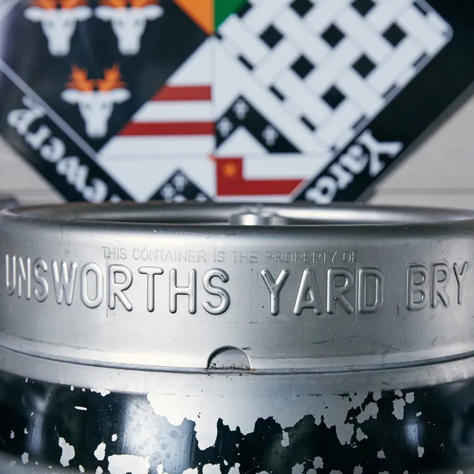
Beer + a courtyard pizza at Unsworth's Yard.
A courtyard off Ford Road with a five-barrel brewery (free walk-in tastings), Cartmel Cheeses, Oscar's wine bar, the Wine Snug, the Mallard tea shop and a pizzeria with live music under a retractable roof on Friday and Saturday evenings in summer. Stop here Friday — it's the village's friendliest first impression and saves you the formality on a night you're tired from travel.
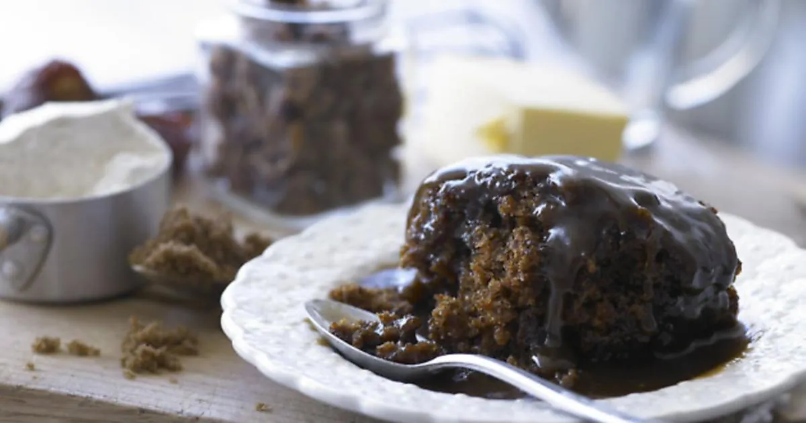
Two puddings at the Cartmel Village Shop.
The original home of sticky toffee pudding — developed by Howard and Jean Johns in 1984, first at their restaurant in Grange, then at the village shop. Rick Stein "Food Hero" recognition; the version everywhere else copies[23]. Buy two — eat one warm, take one home.
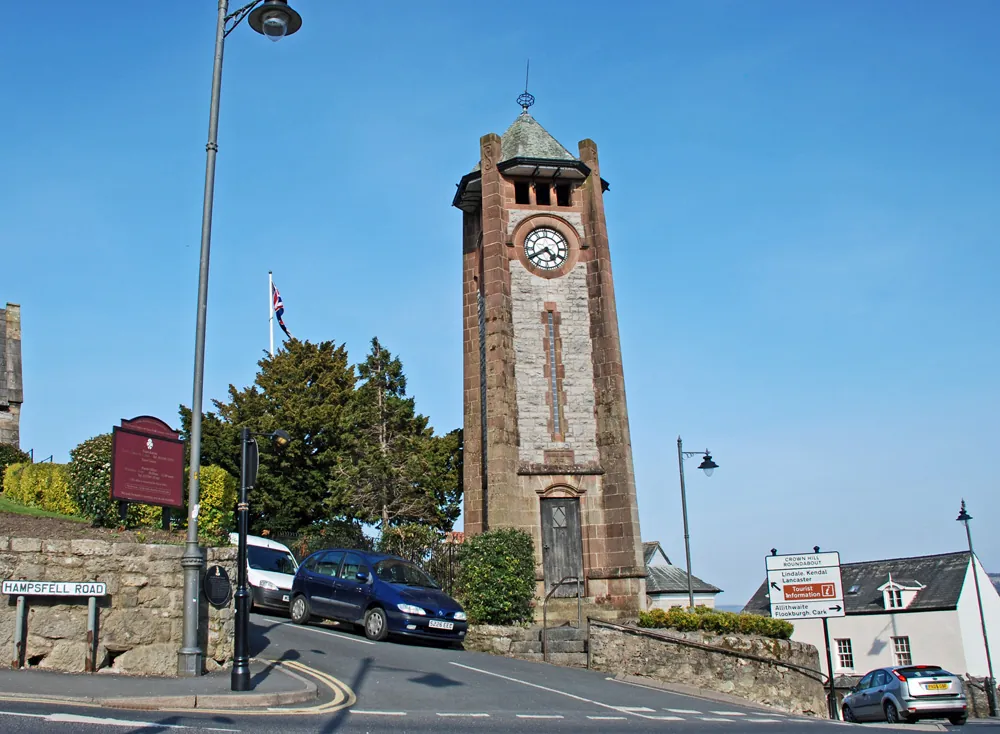
The fell with a stone shelter on top.
The single highest-payoff short outing in the radius. A 1846 hospice on a 220-metre grass-topped fell with a rooftop viewfinder naming peaks in every direction — south across Morecambe Bay, north into the Lakeland fells, west to Holker. Built by a Cartmel vicar, free, no booking[15].
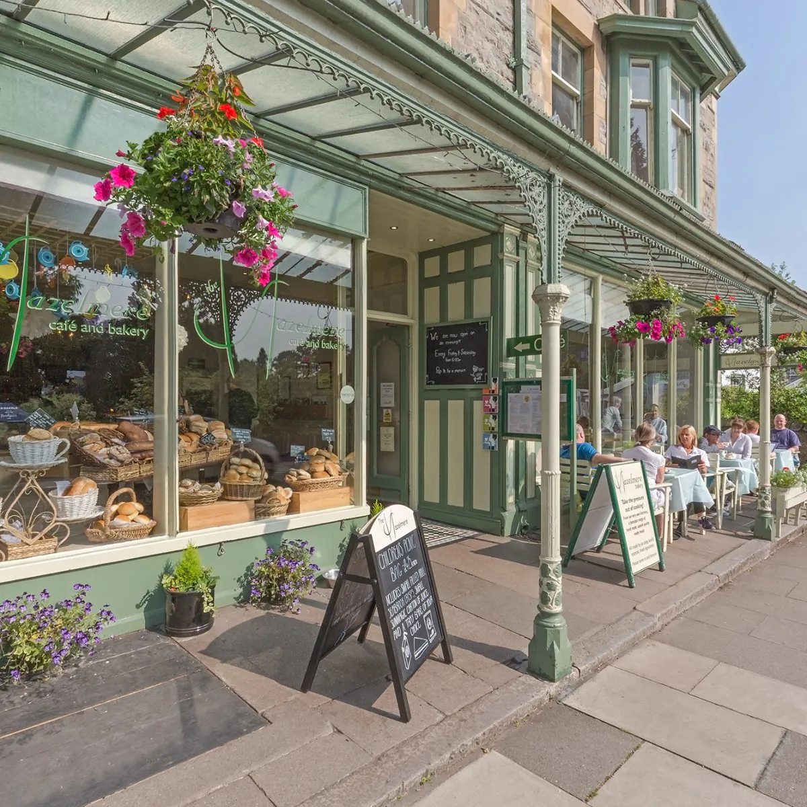
Afternoon tea at The Hazelmere.
An 1897 tearoom in Grange's ornamental gardens serving over 100 leaf teas. Their afternoon tea — scones with Lyth Valley damson preserve and clotted cream — won the British Guild of Tea Shops' Top Afternoon Tea Award in 2006 and is the area's benchmark non-L'Enclume eating-out experience[16].
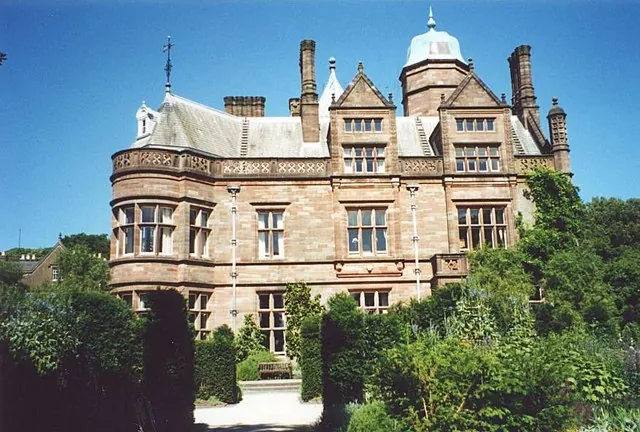
The Great Lime and the Cascade at Holker Hall.
Cavendish family seat three kilometres away. HHA Garden of the Year 1991; a 400-year-old Great Lime listed as one of 50 Great British Trees; the Cascade with its Neptune statue; National Collection of Styracaceae[11]. Aim to finish by 5pm; closed Mondays except Bank Holidays.
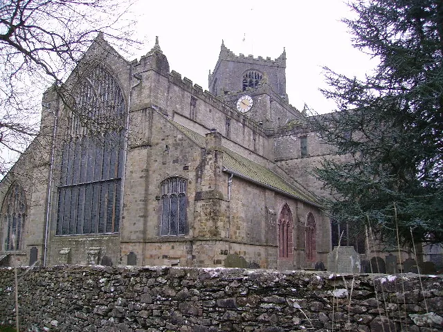
An hour at the Priory before changing.
Augustinian foundation of c.1190 by William Marshal that survived the Dissolution because it doubled as the parish church; preserves 26 carved choir misericords including unicorn, mermaid, ape and Green Man[21]. Free entry, 10:00–16:00 Monday–Saturday — push it on Saturday because it closes early; this is the slim window[22].
L'Enclume — three stars, 15 courses, one walk home.
This is the master key the rest of the weekend rotates around. Tasting menu, sparkling on arrival if you took the DB&B package mid-week, pure Cumbrian produce. Pre-book the taxi back if you're sleeping outside the village — Cartmel taxi capacity thins fast on race weekends[10].
breakfast included
A second Rogan breakfast at Rogan & Co.
If you booked an L'Enclume room, breakfast at the neighbouring Michelin-starred bistro is included — Rogan & Co is Simon Rogan's village pub equivalent, the spillover for the main restaurant[1]. Take your time; you're not driving anywhere demanding.
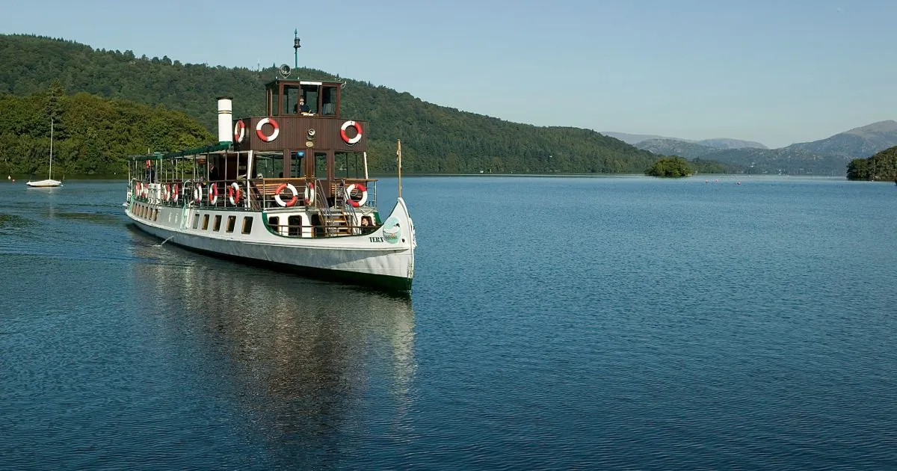
Freedom of the Lake on Windermere.
The £32 adult day pass unlocks the full Bowness–Lakeside–Ambleside triangle for 24 hours[14]. The fleet's three historic steamers — MV Tern (1891, the lake's oldest vessel), MV Teal (1936) and MV Swan (1938) — work the full Yellow route between Lakeside, Bowness and Waterhead[36]. Lakeside is 8 km from Cartmel — closer than Bowness.
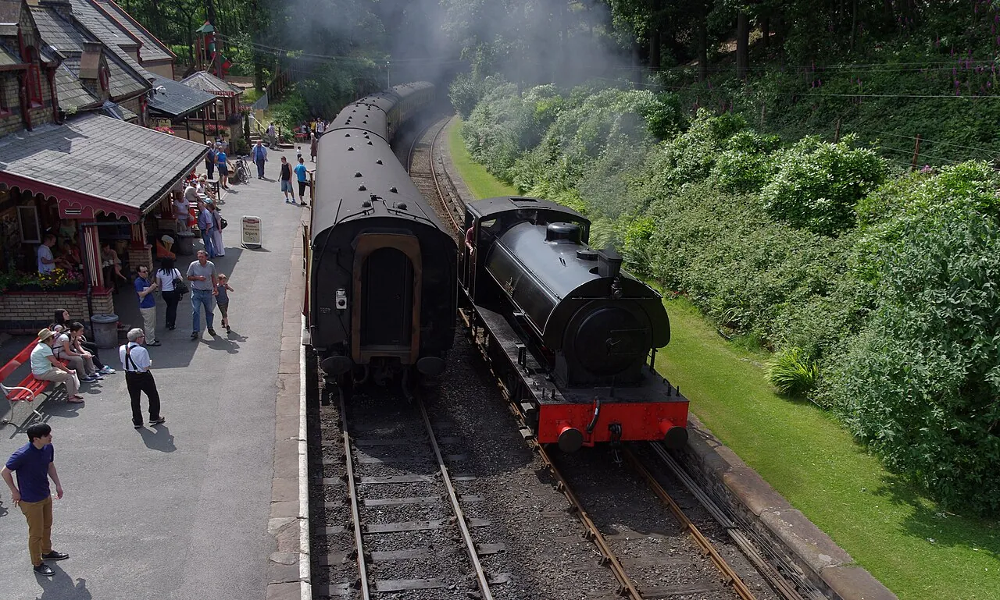
50 minutes through the Leven Valley by steam.
The Lakeside & Haverthwaite Steam Railway is a 50-minute steam-hauled return through the Leven Valley, £12.50 adult / £37.50 family return. Tickets sold on the day at the station only — no online or advance booking — a real trap. Pair with the Yellow Cruise for a Lakeside double[12].
via Cark-in-Cartmel
Train south before the Cumbria dusk.
Furness line back via Lancaster (West Coast Main Line interchange). A Sunday-evening departure beats the Sunday-night A590 traffic out of the Lakes; no rush, the village stays quiet after 5 pm anyway.
Three tiers, one walk home.
Cartmel is small — three intersecting streets and a market square — so "walking distance" is genuinely 2-15 minutes on foot. Tier 1 lets you go home in slippers. Tier 2 is a cab. Tier 3 is the gamble that buys you a second Rogan meal.
L'Enclume — Our Rooms
Sixteen individually designed bedrooms in four categories, clustered in village cottages and a townhouse overlooking the square. Booking the room is how you secure dinner. Breakfast at Rogan & Co included[2].
The Cavendish Arms
500-year-old Grade II listed coaching inn on Cavendish Street, "a stone's throw" from L'Enclume's front door. £75–£125 with breakfast — the closest non-L'Enclume bed at two-figure prices[4].
The Kings Arms
Six rooms named after Romantic poets — Coleridge, Blake, Shelley, Byron, Keats, Wordsworth — in a 300-year-old building overlooking the medieval square at the front and the Priory at the back[5]. Gastro pub with live music: louder than a B&B, quieter than a city.
The Royal Oak
Refurbished en-suite king rooms above a flagstone-and-beam pub, each decorated differently; cooked breakfast included. Tall guests duck for the beams; Wi-Fi can be patchy[6].

Cartmel Old Grammar
Georgian boutique country house pressed up against Cartmel Racecourse. Cooked-to-order breakfast, two log-fire lounges, on-site Refectory using Lake District ingredients[7]. Closer to "boutique hotel" than "pub with rooms".
Aynsome Manor
5-star Georgian manor B&B in open meadowland three-quarters of a mile from the village. Locally-sourced "Cartmel breakfast", evening turndown, dog-friendly, and — relevant for a 15-course dinner — complimentary chauffeur service for the local area[8]. The strongest pick if you'd rather not walk Cartmel Lane in the dark.
Linthwaite House
Leeu Collection hilltop country house above Windermere with Simon Rogan's own Henrock restaurant on-site, plus a private tarn with row boats. Makes a two-Rogan-meal weekend possible at a 20-minute, €30–45 fare[9][10].
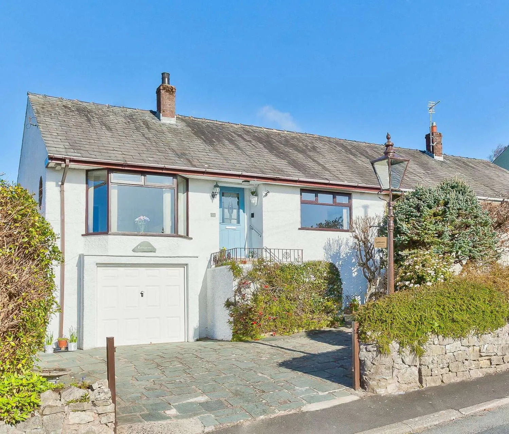
Heft, Inn + Restaurant
Michelin-starred 17th-century inn run by Kevin Tickle — eight years a chef under Rogan at L'Enclume before opening Heft. The closest secondary Michelin star to the brief if L'Enclume's own rooms are gone and "Michelin with your bed" was actually what you wanted[35].
Thirty kilometres of southern Lake District.
Every settlement that surfaces as a bed is also a day-trip target. Cartmel is the anchor; rings mark fifteen and thirty kilometres by road, not as the crow flies — the A590 and the B5278's single-track sections turn 30 km into 35-45 minutes door-to-door.
Four genuine 30 km contenders — pick one per day. They're substantial visits.
Holker Hall
400-year Cavendish seat; HHA Garden of the Year 1991; Great Lime + Cascade[11].
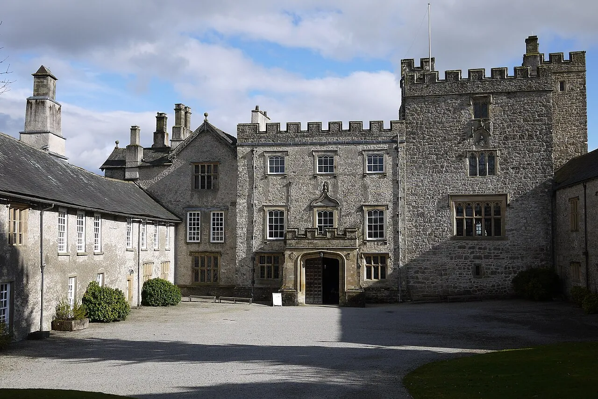
Sizergh Castle
14th-c pele tower, Strickland family seat since 1239; NT's largest limestone rock garden[29]. Free to NT members.
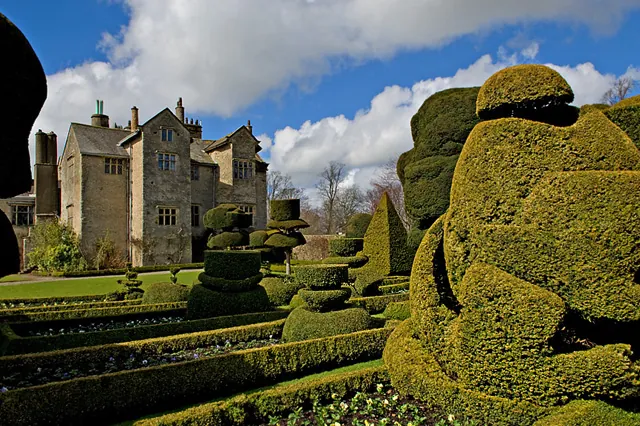
Levens Hall
World's oldest topiary garden — Guillaume Beaumont, 1694, trained under Le Notre at Versailles[30].
Cartmel Priory
1190 Augustinian; 26 medieval misericords. Free, 10:00–16:00 Mon-Sat[22].
Swap the boat for Ruskin, walks, or a tarn.
The Sunday-on-Windermere block above is the photogenic default. Three sideways picks that swap in cleanly without rebooking the rest.
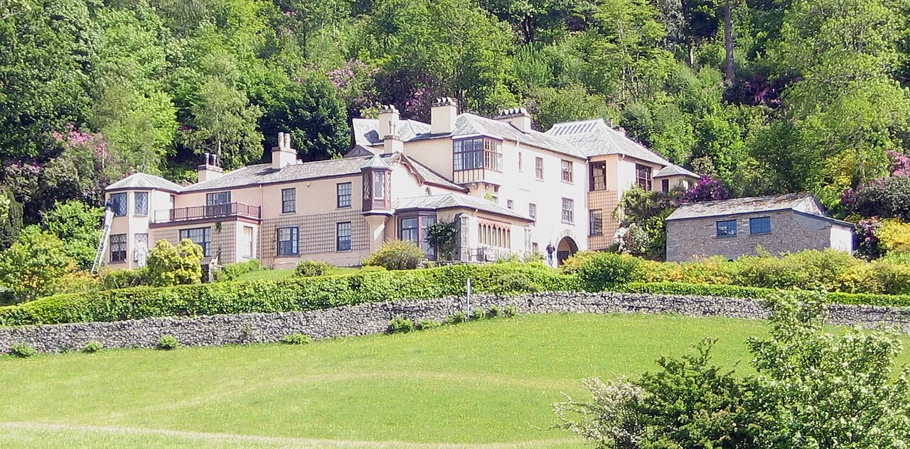
ABrantwood + Steam Yacht Gondola
Ruskin's house on Coniston's east shore (£16.50, house 10:30–16:00) reached by the restored 1859 NT steamer — operates Tue/Wed/Thu/Sat only; book up to 4 weeks ahead[25][28].
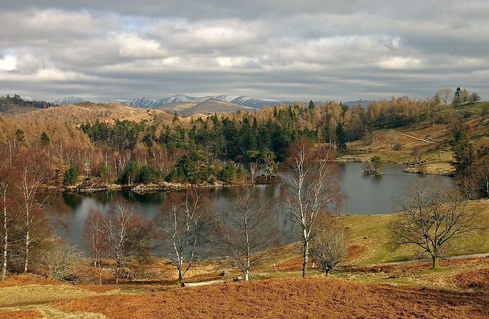
B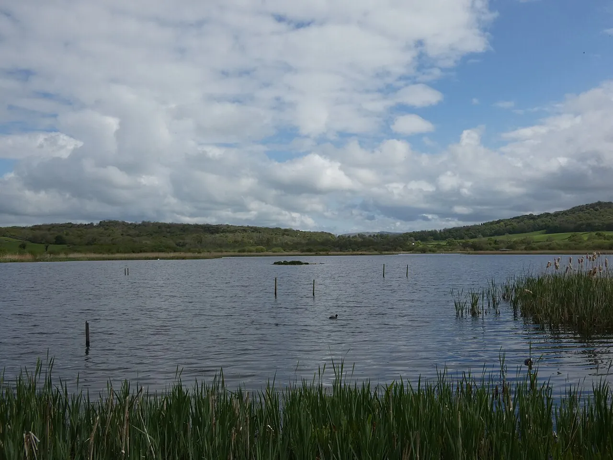
CRSPB Leighton Moss
North-west England's largest reedbed: bitterns, marsh harriers, bearded tits, egrets, otters and red deer; seven hides plus a 9 m Skytower[33]. Half-price for visitors arriving on foot, bike or public transport.
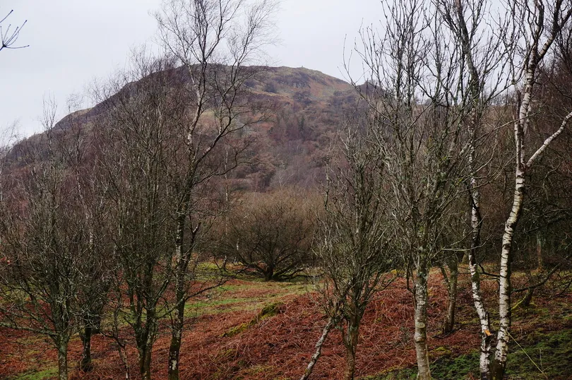
DGummer's How
2.3 km, 118 m of ascent, 40 minutes, easy with one small scramble — near-summit views over Windermere and the highest reward-per-step walk in the radius[38].
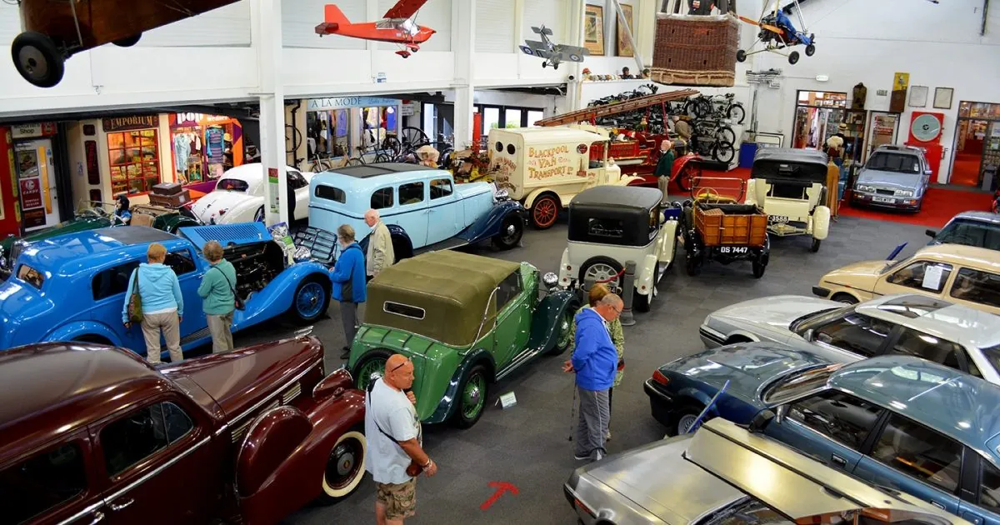
ELakeland Motor Museum
~30,000 exhibits at Backbarrow with the Campbell Bluebird Exhibition honouring Sir Malcolm and Donald Campbell's 21 world land and water speed records; daily 9:30–17:30[31].
Book six months out, or skip these dates.
The southern Lakes runs on a calendar of small, easily-missed traps. This is what to lock in advance — and the one weekend to think twice about.
Three jump-race fixtures two minutes from L'Enclume. Rare race-day-in-the-Lakes experience — but makes the village busy, parking impossible, and taxi capacity tight. Decide deliberately[17].
Beatrix Potter's farmhouse requires pre-booking for everyone, NT members included; tickets released in batches and sell out fast[26]. If it fails, swap for Tarn Hows + Hawkshead — both walk-in.
Tickets sold on the day at the station — no online or advance booking. A real trap; build the buffer in[12].
Baillie Scott's 1898–1900 Grade I-listed masterpiece overlooking Bowness is open Mon-Sat 10am-5pm Apr-Oct — closed Sundays year-round. Front-load it onto Saturday if it's on the list[13].
The restored 1859 Victorian steamer doesn't sail Sundays. If your weekend's centred on a Coniston Sunday, the Coniston Launch (year-round diesel-electric, 15% online discount) is the substitute[28].
Two licensed firms; thins fast on race weekends. Pre-book the return cab when you book the dinner — particularly if you're sleeping at Linthwaite, Punch Bowl, Gilpin or the Samling[10].
If you need to expense it, here's how.
Within 30 km of Cartmel there is no local tech-conference scene to speak of — Lancaster is the only real cluster, driven by Lancaster University. Three pairings line up the Saturday-dinner anchor with an actual reason to be in Cumbria.
EAI SecureComm 2026
22nd International Conference on Security & Privacy in Communication Networks — CORE-ranked, Springer LNICST proceedings; hybrid; chair Prof. Weizhi Meng (Lancaster). Audience reg $519 USD, closes 1 Jul[20].
Drive up the A6 after the closing session Friday afternoon, overnight in Cartmel, dinner Saturday.
BMVC 2026
37th British Machine Vision Conference — one of the top international computer-vision conferences; BMVA + IJCV special issue. Closes Thursday 26 Nov[19].
Take Friday in the Lakes between conference close and dinner. Best academic-tech alignment of the year.
IET · Wings Over Windermere
Illustrated evening talk on the technical development of the Waterbird hydro-aeroplane — Thu 3 Dec 2026, 11:00. The only tech event inside Cartmel's own catchment in 2026[18].
Tag a Friday in the southern Lakes onto the Thursday talk. Walking distance is a stretch, but a five-minute cab from the Netherwood door to Cavendish Street is.
The four sub-pages this weekend rests on.
Each is independently citable; together they cover lodging, characterful alternatives, all the day-trip detail, and the tech-event calendar in granular form.
Walking-distance lodging at or near L'Enclume
Seven places to sleep within a 20-minute walk of Cartmel's Michelin three-star dining room, sorted by distance and what they buy you the morning after.
Special-character lodging within taxi range of L'Enclume
Eleven characterful places to sleep near L'Enclume — from the restaurant's own rooms in a 13th-century smithy to a Rogan-run country house above Windermere.
Day-trips and activities within 30 km of L'Enclume
What to do around Cartmel within a 30 km radius — village walks, Windermere and Coniston, Ruskin and Beatrix Potter, country houses, fells, and Morecambe Bay.
IT conferences and tech events within 30 km of L'Enclume
What's on for IT/engineering near Cartmel after May 2026 — Lancaster cluster plus the Dec 3 IET talk in Grange-over-Sands.
The Cartmel Itinerary · Issue 77
135 citations · four sub-pages · one Saturday table
Open question after all four sub-pages: nobody surfaced a phone-and-email contact ledger for last-minute booking attempts. For a Saturday table that fills six months ahead, the verified booking surfaces — L'Enclume's reservation desk, Aynsome's chauffeur dispatch, Cartmel's two licensed taxi firms — are the missing one-pager.